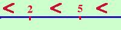
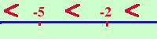

Cambiamento di segno e verso nelle disequazioni
Consideriamo la retta reale: su di essa possiamo sempre fissare
un verso per cui i numeri a destra sono sempre superiori ai numeri
a sinistra. Consideriamo ora due numeri qualunque, ad esempio
2 e 5

e la disuguaglianza corrispondente
2  5 5
Se moltiplico per -1 ottengo i due valori -2 e -5 che nella
retta reale
sono

e la disuguaglianza corrispondente e'
-2  -5 -5
oppure in modo equivalente (
preferibilmente lungo la retta reale
si cerca sempre di andare da
sinistra verso destra cioe' scrivo prima i valori piu' piccoli poi
il segno
minore e infine i valori piu' grandi)
-5 -2
|
Se moltiplico o divido per un numero negativo devo cambiare di
verso la disequazione
|
|